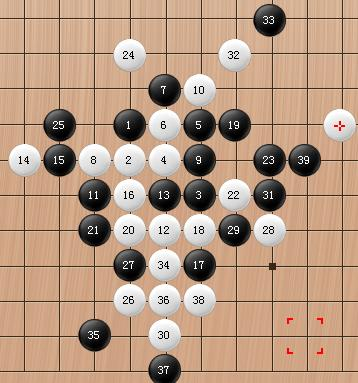
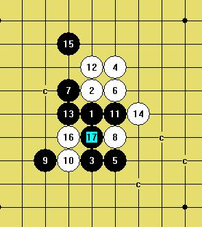

既然平衡胜不了你，只好用传说的必败胜你了
#1 既然平衡胜不了你，只好用传说的必败胜你了 作者：下棋思思 发表时间：2009-6-19 12:03:40
我喜欢五子棋，介于痴迷和不痴迷之间。因为喜爱，常想一口吞个大胖子，但事实证明，吞个西红柿都噎死我这样的人。为了活着，只能悠着点了。
下棋以来，从听说 26 种开局，花浦必胜起，我就几乎不开花浦，只是为了防守看过一些谱和强防几式，如果让我执黑下花浦，我下不好。这可能是因为虚荣吧，开必胜而胜不了心里会莫名失落。去三手下棋之前，我常开传言的平衡局，但因一打，自然是不平衡的。
前几天，在三手与人下棋，回味起来觉得十分有意思。虽然我以 5 ： 6 告负，但我所胜的局，全是理论上必败的局。
第一局，对方开疏未交换，仅三十多手，对方就在棋盘右方成 43 杀掉，怎么那么快呢，我多么地不服气啊，为了挽回颜面，我决定开必败战胜对手。于是
第二局，我开慧星未交换，对方应该是不熟悉慧星局白胜法，十几手之后已无明显优势，也许是因为这是理论上的白必胜吧，对方始终以攻为主，五六十手没攻下，很快溃败。
第三局，对方开疏未交换，本想用变花的骗招，结果落子时一激动下了强四，悔棋未得到允许。我小心地应对，还是输掉了。如图，也许31手下在15下就不会速败了。

第四局，我开斜月交换，不记得前几手如何下的了，只记得很快偏离大家常下的定式，于是双方攻守不让，谁也无明显优势，我试探地说：“说句话不怕你不爱听。”对方就让我说说看，我说“原来你离开谱也没什么好招法啊。”对手就说这是事实啊，怎么会
#2 Re:既然平衡胜不了你，只好用传说的必败胜你了 作者：方圆之外 发表时间：2009-6-19 13:11:03
 基本功。。
基本功。。［ 下棋思思 于 2009-6-19 15:11:34 时花20金币送鲜花一朵］
#3 Re:既然平衡胜不了你，只好用传说的必败胜你了 作者：茗弈小刀 发表时间：2009-6-19 13:28:09
写的很深刻也很实在朴实，是自己对弈时内心想法真实的文字表达。第一图这个5我个人感觉还是不太好下，黑白混战，但后盘应该黑有优势。11手后局面变化复杂，有很多未知的领域，思思下了最常见的变化。行至21手，到此黑棋基本控制全局但是黑无必胜,白也没有什么机会。22有几个选择，思思个是其一，跳一步也很不错，另外我摆几个仅供参考：
=======上图对应的爱五子棋谱代码如下，以便你拆解：========
h8h7j6i7j8i8i9g7j7j9g6i5i6e7f7h6j4j5k8h5g5l9
======================================================
上图这个22比较主动
=======上图对应的爱五子棋谱代码如下，以便你拆解：========
h8h7j6i7j8i8i9g7j7j9g6i5i6e7f7h6j4j5k8h5g5h10
======================================================这个22也可以试试
=======上图对应的爱五子棋谱代码如下，以便你拆解：========
h8h7j6i7j8i8i9g7j7j9g6i5i6e7f7h6j4j5k8h5g5e5
======================================================
这个22是骗，23在19下边可以胜。
回到实战图，思思自己也意识到了是31的问题I5，很好这个点，把下边白的优势先交换掉，局面仍是黑优的。
第7局那个4是败，疏星的4是唯一，别的不可取。
很高兴思思把自己下棋的收获和自己的分析拿来与大家分享，谢谢！祝愿我们的朋友思思在五子棋路上越走越稳，棋技越来越好！
［ 下棋思思 于 2009-6-19 15:02:43 时花20金币送鲜花一朵］
#4 Re:既然平衡胜不了你，只好用传说的必败胜你了 作者：从头再来 发表时间：2009-6-19 13:59:55
下棋思思老师写得很好，学习了，多谢！
［ 下棋思思 于 2009-6-19 15:12:00 时花20金币送鲜花一朵］
#5 Re:既然平衡胜不了你，只好用传说的必败胜你了 作者：下棋思思 发表时间：2009-6-19 14:23:57
胜的全是骗，要不是娱乐哪敢如此冒险！还有一个以前常用的，最近不再敢用的局一直困惑着我，对于瑞星的骗8，某书上讲定式9、11如下图，我看这样虽然黑能胜，但有时不是很容易，而对手如果将9手放于4、6之间，好像白速死，没有什么机会了。我就不明白书上怎么没把9手置I8呢，如果9手放I8，10手放哪才不能被黑三两步之后VCT，10手放哪还有反击的一线希望？敬待前辈、高手指导，给个结论我也就死心了，能给个不错的10更好！
=======上图对应的爱五子棋谱代码如下，以便你拆解：========
h8h9h6i9g9i7i6i10f6g6f8
======================================================
=======上图对应的爱五子棋谱代码如下，以便你拆解：========
h8h9h6i9g9i7i6i10i8
======================================================
［ 茗弈小刀 于 2009-6-19 15:20:25 时花20金币送鲜花一朵］
#6 Re:既然平衡胜不了你，只好用传说的必败胜你了 作者：屏蔽 发表时间：2009-6-19 14:34:43
=======上图对应的爱五子棋谱代码如下，以便你拆解：========
h8i9h6h9g9i7i6i10f6g6f8e7
======================================================
传说中的唯一防（笑
=======上图对应的爱五子棋谱代码如下，以便你拆解：========
h8i9h6h9g9i7i6i10i8g8f7g6f5g4g5f6e7
======================================================
个人认为比较强硬的16，17后容易，但17感觉不是很好想
［ 茗弈小刀 于 2009-6-19 15:02:15 时花20金币送鲜花一朵］
［ 下棋思思 于 2009-6-19 15:10:26 时花20金币送鲜花一朵］
#7 Re:既然平衡胜不了你，只好用传说的必败胜你了 作者：茗弈小刀 发表时间：2009-6-19 15:04:33
谢谢屏蔽老师的解答。一图的9，11是黑的老定式，对攻取胜（有唯一防屏蔽老师已说了）；二图个9必胜更简单。［ 下棋思思 于 2009-6-19 15:12:28 时花20金币送鲜花一朵］
#8 Re:既然平衡胜不了你，只好用传说的必败胜你了 作者：小天元子 发表时间：2009-6-19 15:05:42
=======上图对应的爱五子棋谱代码如下，以便你拆解：========
h8h9h6i10i6i9g9i7f6g6f8e7
======================================================
白优
宁愿下这个11
=======上图对应的爱五子棋谱代码如下，以便你拆解：========
h8h9h6i10i6i9g9i7f6g6i8f8h4h7g7
======================================================
=======上图对应的爱五子棋谱代码如下，以便你拆解：========
h8h9h6i10i6i9g9i7f6g6i8j8g8f8h7j5e7g5e8f9d7
======================================================
［ 下棋思思 于 2009-6-19 15:11:12 时花20金币送鲜花一朵］
#9 Re:Re:既然平衡胜不了你，只好用传说的必败胜你了 作者：茗弈宽容 发表时间：2009-6-19 15:12:09
=======上图对应的爱五子棋谱代码如下，以便你拆解：========
h8i9h6h9g9i7i6i10f6g6f8e7g7
======================================================
［ 下棋思思 于 2009-6-19 15:14:37 时花20金币送鲜花一朵］
#10 Re:既然平衡胜不了你，只好用传说的必败胜你了 作者：小天元子 发表时间：2009-6-19 15:14:06
=======上图对应的爱五子棋谱代码如下，以便你拆解：========
h8i9h6h9g9i7i6i10f6g6f8e7g7i5
======================================================
#11 Re:既然平衡胜不了你，只好用传说的必败胜你了 作者：茗弈宽容 发表时间：2009-6-19 15:15:09
哦，看到了。谢谢LS朋友。
#12 Re:既然平衡胜不了你，只好用传说的必败胜你了 作者：茗弈小刀 发表时间：2009-6-19 15:23:45
小天元子这个12
=======上图对应的爱五子棋谱代码如下，以便你拆解：========
h8i9h6h9g9i7i6i10f6g6f8e7
======================================================
这个9黑杀不了的就差这里，所以推荐思思用另个9也就是明星一打的正确下法。
#13 Re:既然平衡胜不了你，只好用传说的必败胜你了 作者：安娜制作所 发表时间：2009-6-19 15:37:10
这个小骗从花月与疏星互通,还是挺好用啊!研究一下,小心受骗!
#14 Re:既然平衡胜不了你，只好用传说的必败胜你了 作者：小天元子 发表时间：2009-6-19 15:51:23
晕，再扫了下，地毯了了2个强12
=======上图对应的爱五子棋谱代码如下，以便你拆解：========
h8h9h6i10i6i9g9i7f6g6i8f8
======================================================
败12
=======上图对应的爱五子棋谱代码如下，以便你拆解：========
h8h9h6i10i6i9g9i7f6g6i8j8
======================================================
败12
看来次定9必胜恐怕是真的了。。。
#15 Re:既然平衡胜不了你，只好用传说的必败胜你了 作者：傀儡 发表时间：2009-6-19 15:53:24
 好好学习下
好好学习下
#16 Re:既然平衡胜不了你，只好用传说的必败胜你了 作者：小天元子 发表时间：2009-6-19 16:26:00
这路是唯一防了
=======上图对应的爱五子棋谱代码如下，以便你拆解：========
h8h9h6i10i6i9g9i7f6g6i8h10g8j8g11g7
======================================================
#17 Re:既然平衡胜不了你，只好用传说的必败胜你了 作者：茗弈小刀 发表时间：2009-6-19 16:31:13
=======上图对应的爱五子棋谱代码如下，以便你拆解：========
h8i9h6h9g9i7i6i10f6g6i8h10g8j8g11g7e8f8f9
======================================================
#18 Re:既然平衡胜不了你，只好用传说的必败胜你了 作者：歇菜了 发表时间：2009-6-19 18:58:14
=======上图对应的爱五子棋谱代码如下，以便你拆解：========
h8i9h6h9g9i7i6i10i8g8f7g6f5g4g5f6e5
======================================================
李一老师说的这个好像直接活3就能杀了吧。。
#19 Re:既然平衡胜不了你，只好用传说的必败胜你了 作者：茗弈宽容 发表时间：2009-6-22 13:24:33
这里高手多多.得好好向大家学习了.
#20 Re:Re:既然平衡胜不了你，只好用传说的必败胜你了 作者：小天元子 发表时间：2009-6-26 9:47:05
#21 Re:既然平衡胜不了你，只好用传说的必败胜你了 作者：茗弈逐曰 发表时间：2009-7-2 9:11:46
#22 Re:Re:既然平衡胜不了你，只好用传说的必败胜你了 作者：岑小鱼 发表时间：2010-4-18 11:01:39
引用：
原文由 茗弈小刀 发表于 2009-6-19 13:28:09 :
=======上图对应的爱五子棋谱代码如下，以便你拆解：========
h8h7j6i7j8i8i9g7j7j9g6i5i6e7f7h6j4j5k8h5g5e5
======================================================这个22是骗，23在19下边可以胜。
［ 下棋思思 于 2009-6-19 15:02:43 时花20金币送鲜花一朵］
发现关键的一句 曾经分析过这个局面但没有找到胜法 求教...详细必胜之法
#23 Re:既然平衡胜不了你，只好用传说的必败胜你了 作者：小帮帮 发表时间：2010-4-18 12:05:54
写得很好！求知，可以跟高手下自己未知的局面；求胜，则开什么都可以；求乐，使用骗招是一个很好的选择。我很少下平衡，大部分是开必败。只有开必败，看出对方棋力之后，再开平衡！